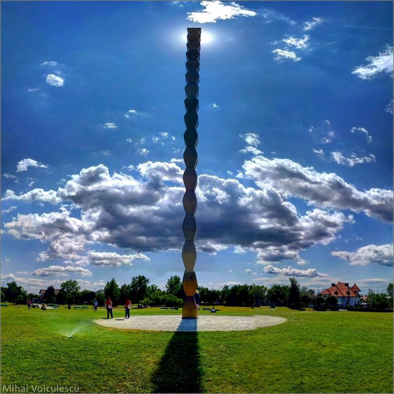

Opere Remarcabile
Coloana fără Sfârșit
Un simbol al infinitului și al aspirației spre cer, sculptura este considerată una dintre cele mai emblematice lucrări ale lui Brâncuși.
Poarta Sărutului

O lucrare care explorează tema iubirii, folosind linii simple și simbolism puternic.
Masa Tăcerii
Un simbol al reflecției și al introspecției, această lucrare este una dintre cele mai cunoscute sculpturi ale sale.